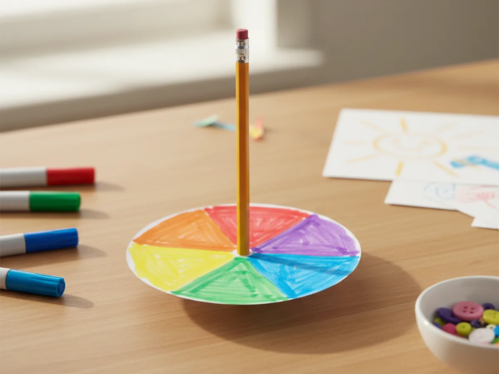
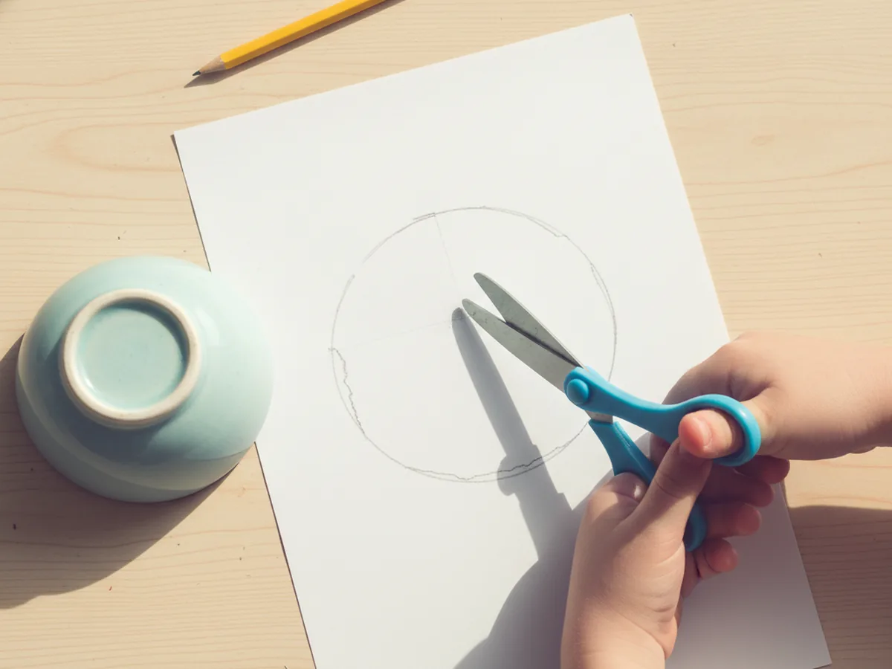
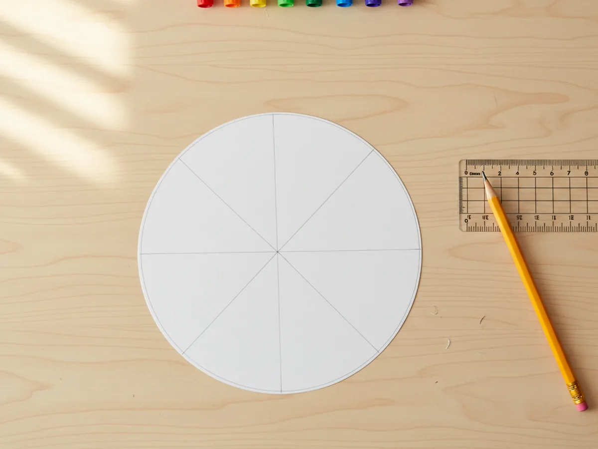
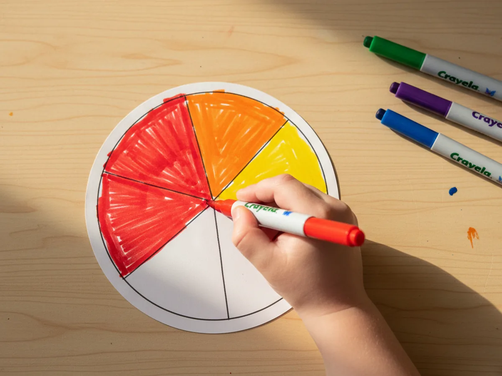
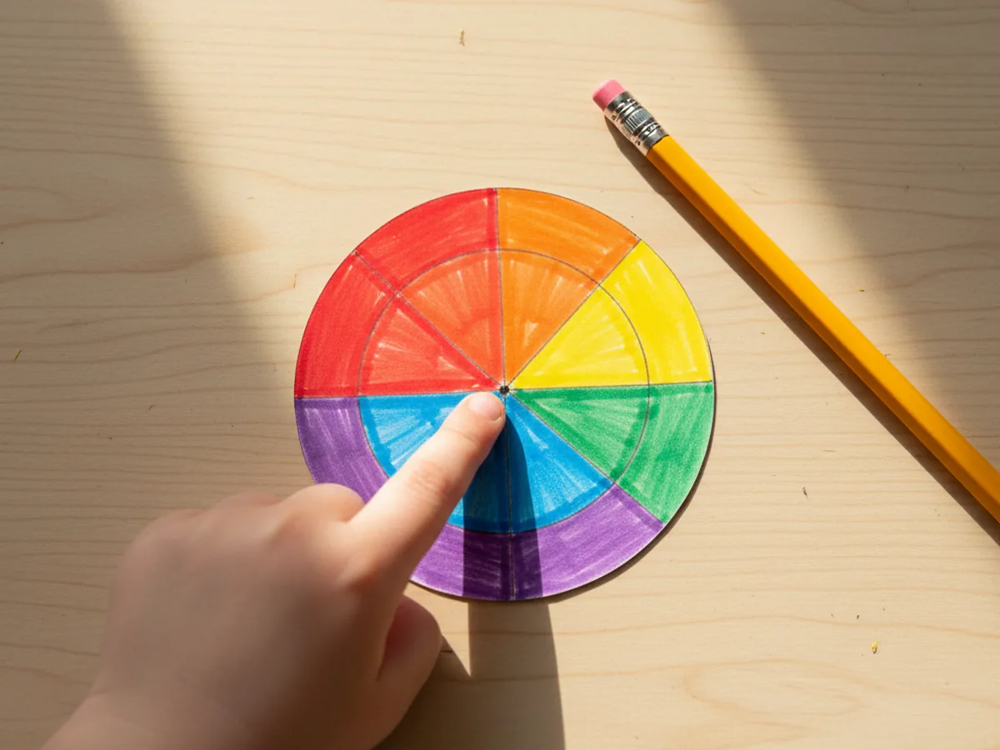
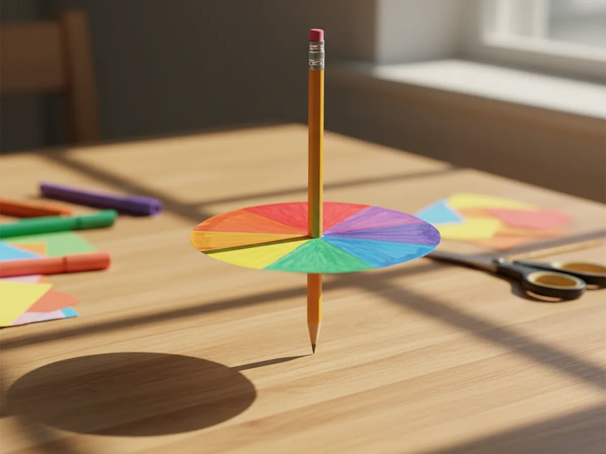
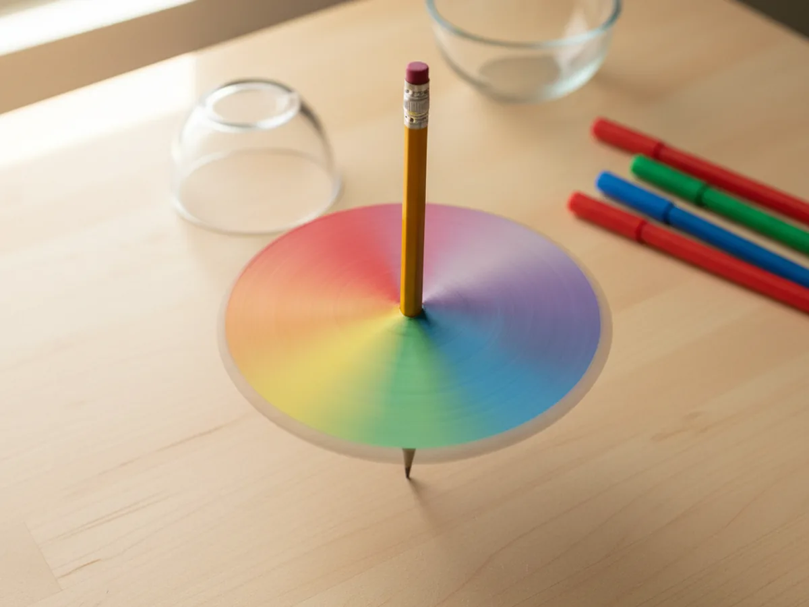

If you're looking for a quick craft that feels a little bit like magic, this paper spinner craft is the one. You color a simple paper disc with bright rainbow sections, push a pencil through the middle, and give it a spin. The colors blur into the softest pastel rainbow right before your child's eyes, and they will absolutely lose their minds in the best way. ✨
Why Kids Love This Craft
There's something thrilling about a craft that does something. Most paper crafts end with a finished decoration, and that's wonderful, but this one ends with an actual toy that moves. The moment your child gives the spinner its first wobble and sees the colors swirl together, you'll see their eyes go wide. It feels like a science experiment and an art project rolled into one.
This simple paper spinner craft is also wonderful for fine motor skills without feeling like work. Coloring inside the pie-slice sections builds careful hand control, folding the disc to find the center practices following directions, and learning to spin the pencil with just the right flick is genuinely good practice for little fingers. It looks like play because it is play.
Best of all, this easy paper spinner craft is endlessly repeatable. Once your child sees how the rainbow version blends, they'll want to try a black and white version, a glitter version, a polka dot version. Every spin teaches them something new about color, and you'll catch yourself sneaking off with one to spin at your desk. It's that fun. 🌈
What You'll Need
Here are the simple supplies you'll need to make a paper spinner craft together. Nothing fancy, and most of it is probably already living in your craft drawer.
- Astrobrights bright cardstock, sturdier than copy paper so the spinner holds its shape.
- Crayola construction paper, a softer alternative if you don't have cardstock on hand.
- Crayola classic broad line markers, bright colors are key for the magic blur effect.
- Fiskars blunt-tip kid scissors, sized for ages 4 to 7 and easy on little hands.
- Elmer's washable purple glue sticks, only needed if you decide to layer the design.
- A sharpened pencil or sturdy toothpick, this becomes the spinning axle.
- A small bowl or cup, used as a tracing guide for the circle.
- A ruler, helpful for drawing the pie-slice sections.
Step-by-Step Instructions
Follow along with this paper spinner craft step by step. Each step is short and friendly, and the whole project comes together in about twenty minutes from start to first spin.
Step 1: Trace and Cut Out the Spinner Disc
Start by tracing a circle onto a sheet of bright cardstock. A small bowl, a roll of tape, or the bottom of a kid's cup all work as a tracing guide. Aim for a circle around four inches across, big enough to color easily but small enough to spin freely on a table. Help your child cut along the line to release the disc.
If your child is brand new to scissors, you can pre-cut the disc and let them feel like the helper for this part. The circle does not need to be perfectly round, a slightly wobbly edge will not affect how the spinner spins at all.

Step 2: Divide the Circle into Sections
Lay the disc flat and use a ruler and pencil to draw light lines from the center to the edge, dividing the circle into six or eight pie-slice sections. Six is easier for younger kids, eight gives a more dramatic color blend when it spins. Either way works beautifully.
Don't worry about perfect symmetry here. Eyeballing the sections is totally fine, and the colors will still blur together once the spinner is in motion. The lines are just a soft guide for your child's coloring.

Step 3: Color Each Section a Different Bright Color
Now for the favorite part. Grab a set of bright markers and let your child fill in each pie-slice section with a different color. Reds, oranges, yellows, greens, blues, and purples create that classic rainbow blend, but any bold combination will look gorgeous when it spins.
Encourage your child to color all the way to the edge and to press firmly so the colors are nice and saturated. The bolder the colors, the more dramatic the blending effect will be once the spinner is moving. This is also where every kid puts their own personality into the spinner, and no two ever look the same.

Step 4: Find and Mark the Center
For the spinner to spin smoothly, the pencil needs to go through the exact center of the disc. The easiest way to find it is to fold the disc in half once, then in half again. The point where the two creases meet is your center. Open the disc up and mark that spot with a small dot.
If your child colored over the original center mark, no worries at all. The folding trick works every time and is honestly more fun for kids than measuring. They love seeing the secret center reveal itself.

Step 5: Push a Pencil Through the Center
This is the grown-up part of the project. Use a sharpened pencil or a sturdy toothpick and gently push it through the center dot you just marked. Keep the pencil straight up and down so the disc sits perpendicular to the pencil, like a tiny round table on a single leg.
For a classic spinning top, slide the disc down to about an inch from the pencil tip, leaving the rest of the pencil sticking up as the handle. If the hole feels too loose, a tiny dot of glue around the pencil where it meets the disc will lock everything in place.

Step 6: Give It a Spin and Watch the Magic
The big moment! Set the spinner on a smooth table and pinch the top of the pencil between your thumb and pointer finger. Give a quick twist and let go. The disc will spin like a top, and as it spins, the rainbow sections blur into a soft, glowing pastel rainbow that looks completely different from the colored disc you started with.
Try slow spins, fast spins, and spinning in both directions. Have your child try, then try again, until they get the hang of the flick. Every kid we've ever made one of these with has spent a solid ten minutes just spinning their paper spinner craft over and over, totally captivated. 💛

Variations to Try
Black and White Optical Spinner: Skip the rainbow and color the disc with thick black-and-white spirals or zigzag patterns. When it spins, the patterns create a hypnotic optical illusion that older kids absolutely love. It feels like a real vintage optical toy.
Two-Sided Story Spinner: Use a slightly thicker disc and draw something different on each side, like a fish on one side and a bowl on the other. When the spinner moves, the two images appear to combine into one because of how fast they alternate. This version is a great one for kids who love science demos.
Glitter Glue Sparkle Spinner: Once the rainbow markers are dry, add small dots and lines of glitter glue along the edges. The dried glitter sparkles dramatically when the spinner is moving, and the result feels extra special for birthdays, party favors, or rainy weekend projects.
Final Thoughts
This paper spinner craft is one of those rare projects that delivers a wow moment for the whole family. It's quick, it's low-mess, and the toy at the end is just as fun as the making. Even better, the supplies are everyday craft drawer items, so you can pull this one out anytime you need a winning twenty minutes with your kids.
Try a few different versions side by side and let each child make their own. They'll pick favorite color combinations, race spinners against each other, and probably ask to make another one tomorrow. Happy crafting, friend!
More Crafts You'll Love
If your kids loved this paper spinner craft, here are two more easy paper projects they'll have a blast making with you: